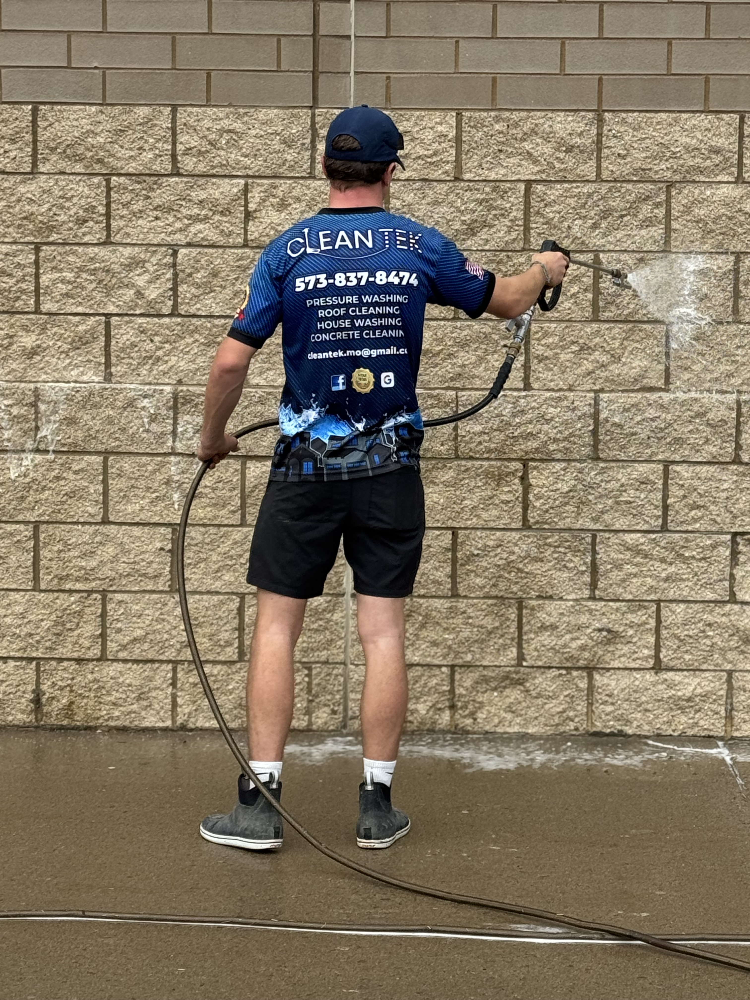
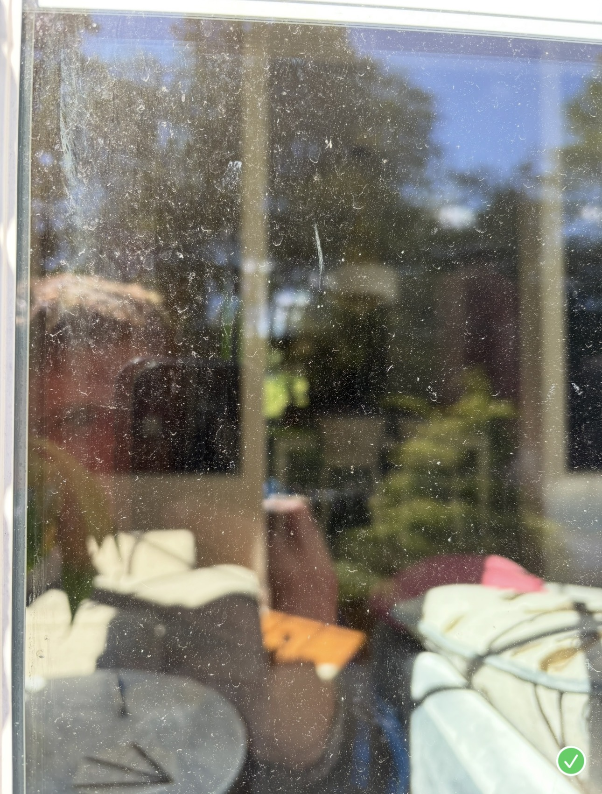
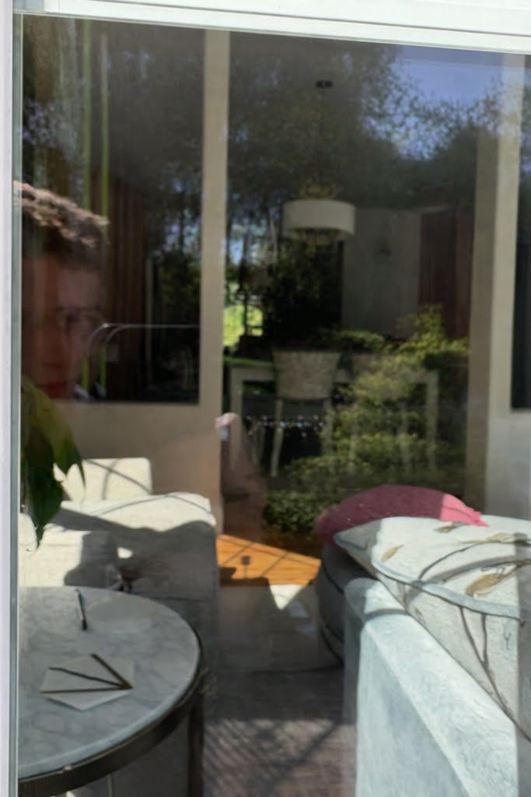

Pressure Washing
Professional pressure washing for residential and commercial exterior surfaces.

Pressure washing, house washing, driveway cleaning, window cleaning, and concrete patio cleaning done with professional equipment and attention to detail.
We help residential and commercial properties look clean, sharp, and well-maintained with professional exterior cleaning services throughout Southeast Missouri.
Professional pressure washing for residential and commercial exterior surfaces.
Safe exterior washing for siding, trim, and other home surfaces that need a fresh clean look.
Lift years of buildup from concrete and improve the look of your property fast.
Detailed window cleaning for clearer glass and a better finished appearance.
Patios, walkways, steps, and concrete areas cleaned with commercial equipment.
Exterior cleaning solutions for commercial buildings, storefronts, entryways, and concrete.
Clean Tek handles everything from driveways, siding, patios, and windows to larger commercial exterior cleaning projects. We show up with the right equipment, take care around your property, and focus on results that actually improve appearance.

Most quotes are done in person so we can properly judge the scope and price the work accurately.
We prepare the area, work carefully around the property, and clean with attention to detail.
Using commercial equipment, we clean the target surfaces thoroughly and efficiently.
We make sure the result looks right and leaves the property cleaner, brighter, and more presentable.


Window cleaning is one of the fastest ways to improve the look of a home or commercial property. Clean glass makes the whole exterior feel sharper, brighter, and better maintained.
Call for Window Cleaning

Clean Tek did a great job on our windows! They were professional and detail oriented. We would use again.
Westendorf PropertiesOwen is very reliable and thorough. I could not be more satisfied with the work he did to pressure wash my house and clean out my gutters. Highly recommend!
Sarah StrohmeyerOwen, the owner, was very professional and timely. He did an excellent job cleaning all of our concrete. I would recommend him and his work without reservation.
Roger TolliverOwen was extremely professional and I couldn't be happier with the results. Thank you for bringing back the looks of my house.
Bob BogackiOwen did a fantastic job pressure washing my entire house. He took extra care around my landscaping and flower beds. My siding and patio look brand new.
Brandi RitterClean Tek provides pressure washing and exterior cleaning services across Southeast Missouri for both residential and commercial customers.
Most quotes are done in person so we can accurately price the work and recommend the right service.